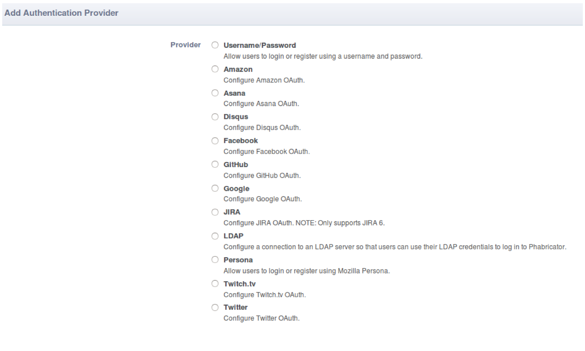

- Introduction
- 1. 代码提交
- 2. 编码规范
- 3. 代码评审
- 4. 持续集成
- 5. 代码服务器
- 6. 技术期刊
- 7. 需求文档
-
8.
设计文档
- 8.1. 文件上传
- 8.2. 离线资源
- 8.3. 可靠消息
- 8.4. Editor调试工具
- 8.5. EMP设计
- 8.6. EWP设计
- 9. 测试文档
- 10. 客户端其他功能
- 11. 技术积累
- Published using GitBook
Phabricator document
1 安装配置
1.1 Phabricator介绍
在代码审查(Code Review)方面，Facebook做了一个可视化的工具，现已开源，叫Phabricator。 工程师可以在页面上非常方便的针对每一段(单行或者多行)代码进行交互讨论。 负责审查的工程师可以接受代码改变，可以提出疑问要求原作者继续修改，可以提出自己不适合以退出该代码审查，等等。 只有代码被明确接受之后才能被工程师提交到服务器端的代码库，这一点集成到提交工具中强制执行。 基本理念就是凡是被很多人不断重复的好的习惯，要将其自动化，绑定到工具之中。以“Don’t make me think”的方式来推广好的practice。
1.2 依赖环境
- Git
version 1.8.5.2 - PHP
version 5.4.24 - PHP扩展 php5-mysql php5-gd php5-dev php5-curl php5-cli php5-common php-apc(可选，但建议安装)
- Apache
version 2.2.6或Nginx，或Lighttpd - MySql
version 5.6.16
1.3 安装
- 安装Phabricator
执行官方的安装脚本,Centos 选择Redhat系列
脚本执行成功后会将所有的依赖安装好。wget http://www.phabricator.com/rsrc/install/install_rhel-derivs.sh ./install_rhel-derivs.sh - 安装APC(可选)
APC是用来提高Phabricator运行速度的扩展类库。
- 安装
pcre-devel:sudo yum install pcre-devel或者sudo apt-get install pcre-devel sudo yum install php-pearsudo pecl install apc
- 安装
1.4 配置环境
配置webserver
- 测试Apache服务
- 加入server name，修改httpd.conf，加入：ServerName localhost
- 重启Apache服务
/etc/init.d/apache2 restart - 验证页面，在地址栏中输入localhost，出现"It works"表示Apache运行正常
配置apache httpd.conf文件添加如下内容，ServerName可以根据需要修改,DocumentRoot需要和安装phabricator的目录一致：
<VirtualHost *> # Change this to the domain which points to your host. ServerName phabricator.example.com # Change this to the path where you put 'phabricator' when you checked it # out from GitHub when following the Installation Guide. # # Make sure you include "/webroot" at the end! DocumentRoot /path/to/phabricator/webroot RewriteEngine on RewriteRule ^/rsrc/(.*) - [L,QSA] RewriteRule ^/favicon.ico - [L,QSA] RewriteRule ^(.*)$ /index.php?__path__=$1 [B,L,QSA] </VirtualHost>适用于2.4之前的版本：
<Directory "/path/to/phabricator/webroot"> Order allow,deny Allow from all </Directory>适用于2.4之后的版本：
Apache 2.4 and Newer <Directory "/path/to/phabricator/webroot"> Require all granted </Directory>- 配置域名
在以上配置都正确的前提下，需要去修改hosts文件，需要对域名进行直接映射。
例如：
重启apache生效.127.0.0.1 phabricator.example.com
1.5 验证Phabricator
- 配置完成后，访问phabricator.example.com页面，会出现管理员注册页面，
按照提示填写信息。
进入Phabricator主页面，在浏览器顶部会出现如下图显示： - 点击进入issue页面，可以看到如下图所示：
其中有一个比较重要的设置是登录页面的配置，如果没有配置退出，之后就不能再次进入登录页面。 - 登录issue
点击进入issue页面->点击“using the “Auth” application”->
点击“Add Authentication Provider”，可以看到如下页面：

选择一种登录或身份验证方式。这里我们先选择“用户名/密码”的方式。确认添加后进入下一页，将所有选项都进行勾选（默认），也可以是根据需要进行设置。 再次刷新这个页面，这个issue就被修复了。
1.6 LDAP配置
- 点击菜单栏Auth按钮,显示页面
- 点击Add Authentication Provider按钮，进入页面：
- 选择LDAP点击ContinueCancel，进入LDAP参数配置页面
- 配置完成后保存,在Auth页面显示LDAP配置完成
1.7 问题处理：
- 启动mysql失败，需要添加sudo权限执行
- httpd启动失败报错
httpd: Could not reliably determine the server's fully qualified domain name修改httpd.conf,将里面的#ServerName localhost:80注释去掉即可
2 Phabricator使用
2.1 Arcanist使用
2.1.1 安装Arcanist
Mac OS X安装, 参见 Arcanist User Guide: Mac OS X
Windows安装, 参见 Arcanist User Guide: Windows
- 先安装依赖（以下两项在执行安装脚本的过程中已安装）：
- 安装 PHP.
- 安装 Git.
- 然后安装Arcanist:
$ mkdir somewhere/ $ cd somewhere/ somewhere/ $ git clone https://github.com/phacility/libphutil.git somewhere/ $ git clone https://github.com/phacility/arcanist.git - 添加环境变量：
$ export PATH="$PATH:/somewhere/arcanist/bin/" - 安装完成后执行命令
arc -h参看帮助信息。
2.1.2 配置工程项目
在项目的根目录新建一个 .arcconfig 文件:
$ cd yourproject/
yourproject/ $ $EDITOR .arcconfig
yourproject/ $ cat .arcconfig
{
"project.name" : "yourprojectname",
"phabricator.uri" : "https://phabricator.example.com/"
}
project.name用来设置项目名称以区别不同的项目。
phabricator.uri定义的uri表示arc要把修改集发送到哪里。
2.1.3 安装Arcanist证书
证书的主要作用是验证，在执行这个步骤之前必须在Phabricator上有账号。
$ cd yourproject/
yourproject/ $ arc install-certificate
Installing certificate for 'http://rytjs.org:8082/api/'...
Trying to connect to server...
Connection OK!
LOGIN TO PHABRICATOR
Open this page in your browser and login to Phabricator if necessary:
http://rytjs.org:8082/conduit/token/
Then paste the token on that page below.
Paste token from that page:
登录http://rytjs.org:8082/conduit/token/ 地址， 获取token并输入，安装成功会提示：
Downloading authentication certificate...
Installing certificate for 'your name'...
Writing ~/.arcrc...
SUCCESS! Certificate installed.
2.1.4 发送修改集
在项目目录下执行命令：
hg commit
arc diff
2.2 Diffusion使用
2.2.1 介绍
Diffusion是一个代码库浏览器，它允许你通过网页来查看代码库（支持svn，git和mercurial）。
2.2.2 配置代码库
- 配置代码库:第一步要做的是就是告诉Pharicator，Mercurial库在哪里，选择菜单Repositories
- 点击 New Repository
- 选择Import an Existing External Repository选项
- 在Repository Type中选项 Mercurial
- 设置Name和callsign，name的设置可以随意，根据指示callsign只能是大写的字母，方便记忆， 后续在代码审核的时候看到的是callsign而不是name，所以好好设置个callsign
- 设置HG根路径（Repository Root），填写HG根路径
- 添加一个授权
- 接下来就一直continue或按需修改即可
- 然后运行Diffusion守护进程：
phabricator/bin/$ ./phd start
2.2.3 Review
Review对pull命令的响应：
- 代码作者已经修改了代码，然后上传，并审核。可以指定审核者
- 指定的审核者会收到一封邮件，要求他们审核对应的修改
- 审核者检查这次修改，对它进行讨论或者批准，或者要求再次修改
- 代码作者需要对审核结果回应
- 经过多次往返之后，审核者批准提交后，作者即可将代码提交至服务器
Review使用技巧：
- 点击修改行，添加评论
- 行间拖拉进行多行评论
- 行间的评论会存为草稿，在页面底部提交评论时，才会提交
Review流程（添加图文说明）
- hg提交本地修改集
hg commit - arc发送本地修改集
arc diff- <
> 这里写title，可以写修正什么Bug，完成什么任务等等 - Summary: 本次Diff的描述
- Test Plan: 测试计划，没有的话写NA，不然提示问题
- Reviewers: 代码审核者
- Subscribers: 订阅者，这个版本的修改希望多个人员查看时使用
- <
- 提交后审核者能够看到Differential中有多少待办,并收到邮件提醒

- 审核者进行审核：代码有问题设置状态为Request Changes，有疑问则Comment询问代码提交者
- 代码提交者需要修改代码，重新
arc diff - 审核者重新审核，若还有问题继续Request Changes，若已修改好，则设置状态为Accept Revision
- 审核者选项：
- Comment：备注
- Accept Revision 接受版本
- Request Changes 请求提交者修改
- Resign as Reviewer 拒绝当审查者
- Commandeer Revision 强制退出当前审查，并且将对方设置为审查者
- Add Reviewers 添加审核者
- Add Subscribers 添加订阅用户
- 提交者选项：
- Comment：备注
- Abandon Revision 放弃版本
- Plan Changes 计划更改
- Add Reviewers 添加审核者
- Add Subscribers 添加订阅用户
- 提交者可以多次在本地
commit，然后通过arc diff提交为一个Revision - 提交的
Revision状态设置为Request Changes,在本地修改后重新commit， 更新Revision，命令是arc diff --update revision_id - 当前
Revision还开启的状态下，可以新建Revision，命令是arc diff --create
2.2.4 Audit
介绍
Audit允许你push和部署代码，不需要等待审查过程结束。
审核工具Audit主要跟踪两件事情：
- 代码提交：审核状态（比如未审核
Not Audited，审核通过Approved，或担忧Concern Raised）。 - 审核请求：可以要求用户去审核一次提交。
审核请求：
- 要求审核：当你所在的工程或工程集需要审核一次提交， 打开审核请求页面，你就会看到要求你审核的请求。 当你通过相关的提交审核，审核要求就会关闭。
- 有问题的提交（Problem Commits）当审核过程中遇到有问题的提交，会将 该提交设置为“担忧”状态。当有问题的提交在通过修改以后，让每个审核者审核通过， 并置为“审核通过”状态后，这个有问题的修改才算是通过了审核。
审核的优势
- 审核完全由Phabricator驱动，用户不用安装客户端arc
- 审核不需要调整现在的工作流
- 审核全程无阻塞
- 即时已经通过审查，也可能通过审核发现新的问题
审核流程：
- 代码提交
hg commit - 在Audit页面查看提交记录
- 点击某一条记录进行审核，并设置为不通过
- 代码提交者和审核者在Audit页面会收到通知，并且收到邮件提醒
- 代码提交者和审核者之间通过备注进行交流，直至问题解决后，统一提交成功
- 查看审核状态